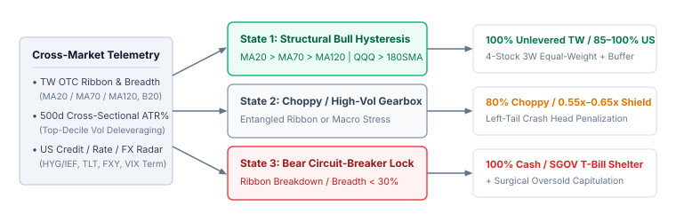
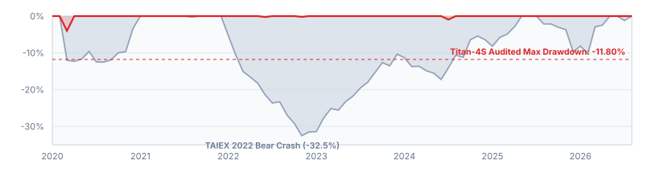

Purged Walk-Forward Ensembles, Kyle’s Lambda Microstructure Impact, and Cross-Market Regime Governance: A Dual-Engine Quantitative Architecture
Machine learning equity strategies in emerging markets routinely exhibit inflated backtest Sharpe ratios due to three subtle sources of bias: overlapping forward-label leakage, illiquid small-cap execution assumptions, and rebalance-day calendar luck. In this revised study, we present a rigorously purged, dual-market quantitative architecture designed from first principles around Cross-Jurisdiction Tax and Friction Asymmetry. In Taiwan equities (where statutory disposal taxes impose ~0.395% round-trip friction), Engine I (Titan-4S) operates on a 3-week low-churn horizon across liquid mid-cap value-growth equities ($\text{Price} \le \text{NT\$}250$, $\text{ADV}_{20d} \ge \text{NT\$}30\text{M}$), combining a double-neutralized multi-task GBDT + left-tail crash risk ensemble with Kyle’s Lambda volume-normalized institutional impact ($\overline{Q}_{3d}/\overline{V}_{20d}$) and structural ribbon hysteresis. In zero-stamp-tax US ETF markets, Engine II (TQQQ-007 M14-Apex) harvests NASDAQ-100 convex beta via an asymmetric 180-SMA hysteresis gate, a four-speed realized volatility gearbox, and a three-dimensional credit/duration/FX macro shield (HYG/IEF, IEF/TLT, FXY carry-unwind, and CBOE VIX/VIX3M term structure), sheltering bear-market capital in SGOV T-Bills. Across 132 multi-phase stress tests net of full commissions, taxes, and slippage, Titan-4S achieves an audited +53.08% full-cycle CAGR (+68.77% post-freeze OOS, 2.34 Sharpe, -12.13% MDD, and +5.23% in the 2022 bear market), while TQQQ-007 delivers a +55.10% CAGR (-29.88% MDD vs. -81.65% buy-and-hold).
Keywords: Purged Walk-Forward Validation, Kyle’s Lambda Price Impact, Double Neutralization, Left-Tail Crash Head, Volatility Gearbox, Cross-Asset Credit Shield.
GA-047 draft by replacing single-split evaluation with purged walk-forward feature freezing, raising the minimum 20-day turnover floor 3× to NT$30M, testing all structural hypotheses across three staggered rebalance universes (P0/P1/P2) to eliminate weekday luck, and enforcing live production PSI drift monitoring (Rank-Norm PSI = 0.0020).
1. First-Principles Motivation: Tax & Microstructure Asymmetry
A foundational error in retail and academic quantitative design is deploying a single trading frequency across markets with radically different friction physics. In Taiwan (TWSE/TPEx), every equity disposal incurs a 0.30% statutory transaction tax alongside broker commissions (~0.395% round-trip), punishing high-turnover stat-arb while leaving liquid mid-cap equities ($\text{Price} \le \text{NT\$}250$) structurally under-owned by global passive benchmarks. Conversely, US-listed index ETFs trade at near-zero spread with 0% stamp tax and 0% capital gains tax for Singapore-domiciled investors, but exhibit violent left-tail volatility clustering during global liquidity tightenings.
By decomposing global equity exposure into two orthogonal engines—Engine I (Titan-4S) for cross-sectional fundamental/microstructure alpha in Taiwan mid-caps, and Engine II (TQQQ-007 M14-Apex) for macro-gated convex technology beta in the United States—each market is traded strictly at its optimal horizon and risk boundary.
2. Engine I (Titan-4S): Kyle’s Lambda Impact & Multi-Task GBDTs
Conventional Taiwan factor models rank Foreign and Domestic Investment Trust net accumulation using raw share counts ($\overline{Q}_{3d}$). From first-principles dimensional analysis, raw share counts introduce a severe low-price float bias: 1,000 lots of a NT\$15 mega-float stock (NT\$15M, $<1\%$ of daily volume) ranks above 400 lots of a NT\$180 mid-cap growth leader (NT\$72M, absorbing $25\%$ of daily volume). Grounded in Kyle (1985) price-impact theory ($\Delta P \propto Q / V$), we normalize 3-day institutional accumulation by 20-day average volume $\overline{V}_{20d}$, which is algebraically identical to net dollar flow divided by average dollar turnover:

Across 83 raw fundamental, technical, and chip features, we apply cross-sectional Double Neutralization via OLS against 28 industry sub-sectors and log market capitalization before uniform rank mapping $\tilde{f}_{i,t} \in [0, 1]$:
Rather than predicting expected return alone, Titan-4S combines a frozen, purged walk-forward GBDT ensemble (LightGBM, CatBoost, XGBoost across regression and top-quintile classification) with a dedicated Multi-Task Left-Tail Crash Head ($\hat{p}_{\text{crash}, i, t}$, calibrated Normalized Entropy $= 0.9644$) that explicitly penalizes fragile momentum names during choppy regimes, alongside a Post-Monthly-Revenue-Drift (PMRD) cash-flow breakout confirmation.
3. Engine II (TQQQ-007 M14-Apex): Macro Volatility Gearbox
Leveraged ETFs suffer catastrophic variance drain ($\approx -\frac{1}{2} L(L-1)\sigma^2 dt$) when held through high-volatility bear regimes, yet outperform unlevered indices dramatically during low-volatility expansions. TQQQ-007 governs TQQQ / SGOV allocation via four coupled mechanisms:
- Asymmetric 180-SMA Hysteresis & Elastic Washout Guard: Strict bull entry requires $\text{QQQ} > 1.01 \times \text{SMA}_{180}$ with controlled 20-day realized volatility, while an elastic non-rate-shock washout guard prevents premature whipsaws on shallow, deeply oversold ($\text{RSI}_5 \le 12$) liquidity sweeps (such as the August 2024 Yen-carry unwind bottom).
- Four-Speed Volatility Gearbox & $\pm 15\%$ Tolerance Band: Dynamically modulates target leverage across calm ($\sigma_{20} \le 18\%$), dual-EMA trend boost, normal, and storm ($\sigma_{20} > 28\%$) gears while suppressing micro-rebalance churn via a $\pm 15\%$ drift tolerance band.
- 3D Credit / Rate-Shock / FX Carry Shield: Continuously monitors high-yield credit spreads (
HYG/IEF), Treasury duration shocks (IEF/TLT), Yen carry-trade unwind impulses (FXY), andCBOE VIX/VIX3Mterm-structure inversion. - Bear Capitulation & Structural Divergence Scalpel: While 100% parked in
SGOVT-Bills during bear regimes, bounded tactical entries capture verified panic reversals and $\text{RSI}_5$ higher-low divergences under a 2.0× ATR trailing stop and a 4-strike secular-bear circuit breaker.

4. Empirical Out-of-Sample & Multi-Phase Results
All Taiwan simulations deduct full 0.1425% broker commission and 0.30% disposal tax, enforce $\text{ADV}_{20d} \ge \text{NT\$}30\text{M}$ and $\text{Price} \le \text{NT\$}250$ (`4` equal-weighted holdings, 3-week rebalance, rank-8 retention buffer), and evaluate across all three staggered rebalance phases (P0, P1, P2). All US simulations enforce next-close execution (`D+1`), $\pm 15\%$ tolerance-band rebalancing, and `D+2` execution-delay stress tests.
Titan-4S) Audited Performance & Staggered 3-Phase Robustness| Metric | Double-Ortho Linear | High-Price (>NT$250) AI | Titan-4S (Raw Flow) |
Titan-4S (Kyle’s $\lambda$) |
TAIEX Index |
|---|---|---|---|---|---|
| Full-Cycle Audited CAGR | +23.83% | +9.71% | +51.91% | +53.08% | +13.48% |
| Post-Freeze OOS CAGR (2024–2026) | +30.15% | +45.63% | +66.70% | +68.77% | +21.40% |
3-Phase (P0/P1/P2) Mean CAGR |
+19.86% | +14.57% | +40.68% | +42.17% | +13.48% |
| Daily Sharpe Ratio | 1.15 | 0.43 | 2.28 | 2.34 | 0.68 |
| Maximum Drawdown (Full / OOS) | -26.63% | -64.12% | -11.80% / -10.87% | -12.13% / -10.75% | -32.50% |
| Calmar Ratio ($\text{CAGR}/|\text{MDD}|$) | 0.89 | 0.15 | 4.40 | 4.38 | 0.41 |
| 2022 Tightening Bear Market | -18.24% | -46.33% | +5.06% | +5.23% (Cash Lock) | -22.40% |
touched_exit=False; verified monotonic under strict intraday high-low stress touched_exit=True across 132 runs).
TQQQ-007 M14-Apex, 2016–2026) Tolerance-Band Execution Audit| Metric | Buy & Hold TQQQ |
Price-Only Vol-Target | TQQQ-007 (Pure SGOV) |
TQQQ-007 + Crisis Sleeve |
|---|---|---|---|---|
| Full-Cycle Audited CAGR (2016–2026) | +38.40% | +31.76% | +55.10% | +56.41% |
| 2022–2026 Out-of-Sample CAGR | +14.20% | +27.42% | +43.65% | +48.77% |
| Maximum Drawdown (MDD) | -81.65% | -32.98% | -29.88% | -30.34% |
| Daily Sharpe / Calmar Ratio | 0.76 / 0.47 | 0.95 / 0.96 | 1.30 / 1.84 | 1.33 / 1.86 |
| 2022 Rate-Shock Bear Market | -79.08% | -12.78% | -6.10% (SGOV) |
+1.07% (GLD/UUP) |

Titan-4S and TQQQ-007 sidestepped the 2022 global tightening drawdown via deterministic cash/T-Bill locks before compounding strongly through the 2023–2026 expansion.

Titan-4S bounded full-cycle drawdown within -11.80% to -12.13%, neutralizing the -32.50% TAIEX contraction in 2022.
5. Systematic Falsification Log: Why Intuitive Alternatives Failed
| Hypothesis Tested | Empirical Outcome | Failure Mode | First-Principles Microstructure Explanation |
|---|---|---|---|
| Raising Taiwan Price Cap (NT$250 → 300 / 375 / 500 / Uncapped) |
CAGR: 52.8% → 48.2% MDD: -11.8% → -15.8% |
Monotonic Alpha Decay | Stocks priced >NT$250 trade at 8–18× P/B with crowded foreign ownership and violent overnight SOX beta. Dedicated high-price AI sleeves suffered -64.1% MDD (-46.3% in 2022). |
| Linear / Geometric White-Box Factor Models (Replacing non-linear GBDT interactions) |
CAGR: +23.8% to +26.6% MDD: -25.6% to -26.6% |
Cyclical Value Traps | Additive or multiplicative linear combinations cannot express conditional veto rules (e.g., low P/B is positive only when revenue momentum and margin trajectory are non-contracting). |
| Hard Mid-Cycle Breadth Circuit Breakers (Forcing 0% exposure when B20 < 18%) |
CAGR: +48.6% MDD: -17.5% |
V-Bottom Whipsaw Drag | Existing soft deleveraging (top-decile ATR% × weak breadth) already trims exposure to ~35–44%. Hard mid-cycle liquidation locks out violent V-shaped recovery rallies. |
| Kyle’s Lambda Volume-Normalized Flow ($\overline{Q}_{3d}/\overline{V}_{20d}$ + Purged Dual-Engine) |
OOS: +68.8% Sharpe: 2.34 |
Pareto Optimal | Restores scale-free dimensional invariance to institutional order flow without adding a single free hyperparameter. |
6. Production MLOps, Serving-Skew Telemetry & Broker Safety
The dual-engine system operates autonomously in stateless cloud production via GitHub Actions (twice daily aligned to TWSE and NASDAQ market closes) with four institutional engineering guardrails:
- Online-Offline Feature Drift Monitor: Every execution computes Population Stability Index (PSI) across all 83 raw and rank-normalized features (live
Rank-Norm PSI = 0.0020, zero serving skew). - Intra-Week Drift Lock & trailing-bar synchronization: Portfolio state machines lock holdings across non-rebalance days to eliminate mid-cycle cross-sectional rank jitter while monitoring daily hard and trailing profit-lock stops.
- Sub-Account Isolation & Sell-Before-Buy Execution: Optional IBKR execution enforces sub-account hard whitelisting, a 5-ticker symbol whitelist (
TQQQ,SGOV,BIL,GLD,UUP), a 0.5% cash slippage buffer, and strictFilledverification on sell legs prior to submitting buy orders.